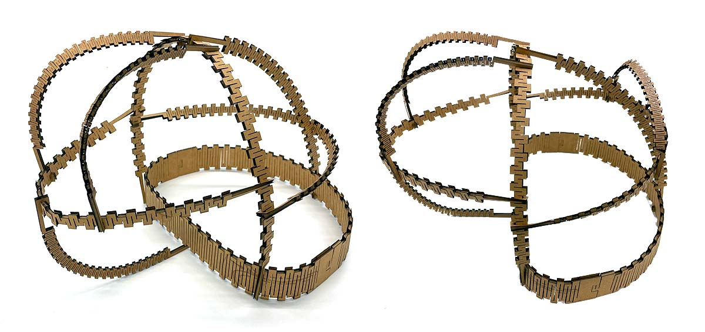
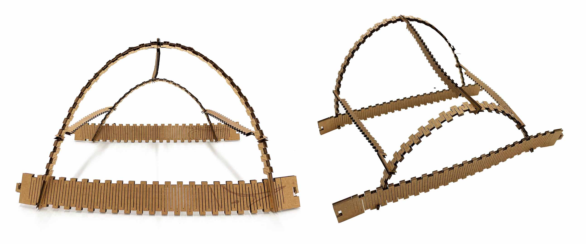
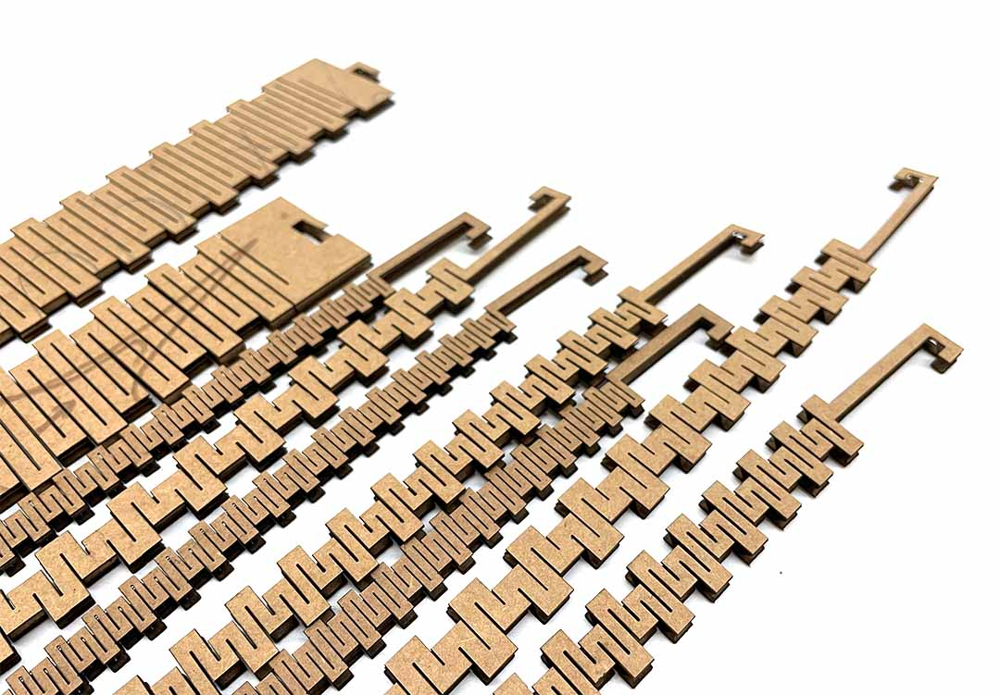
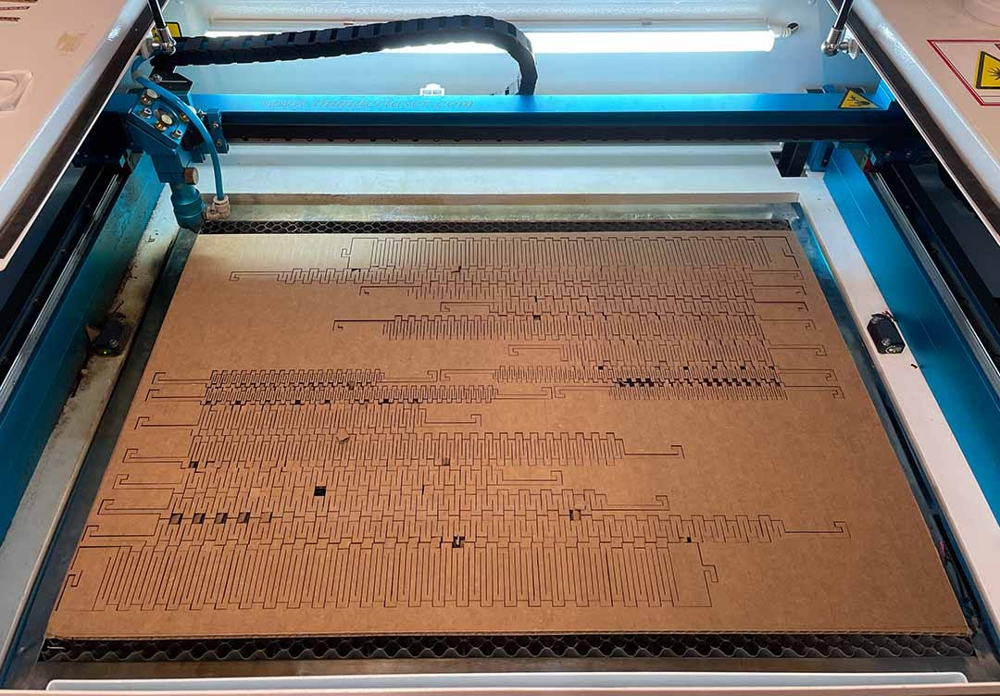
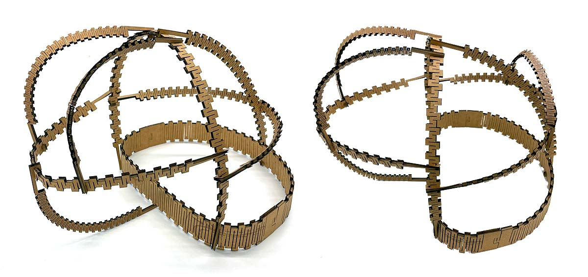
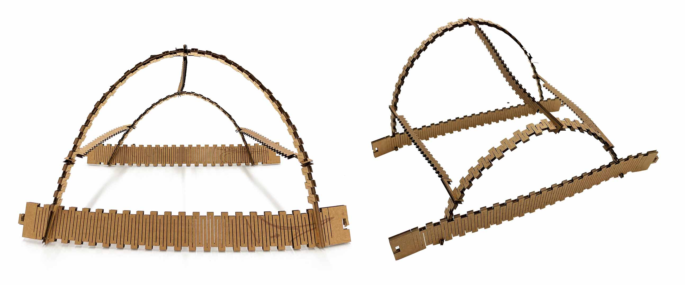
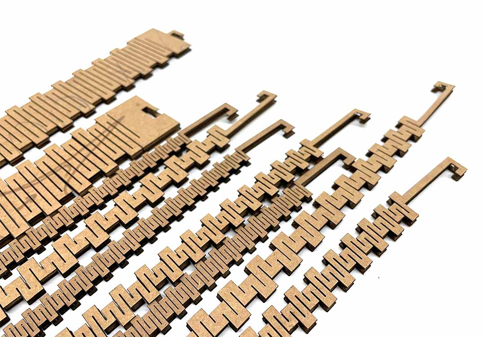
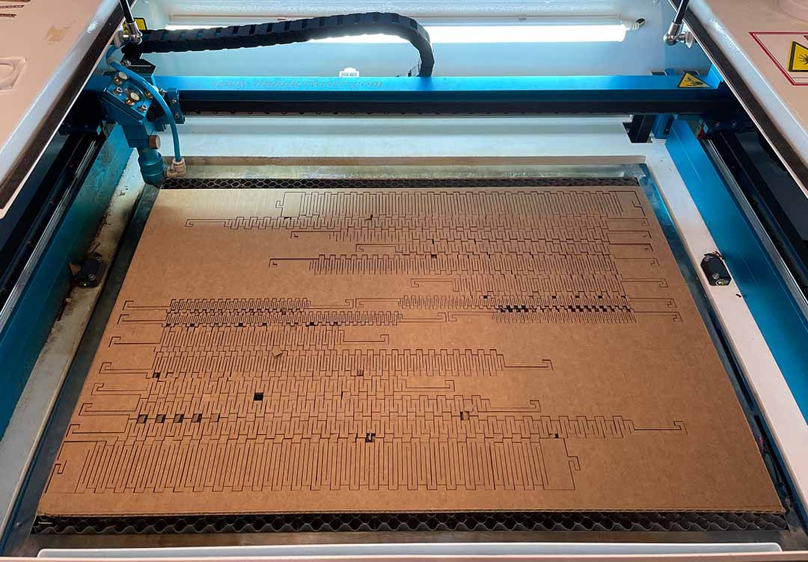

Gabriella Perry
Computer Controlled Cutting
Catenary Cardboard Construction Kit
Catenary Cardboard construction kit uses an intricate pattern to manipulate the behavior of the material. The cut material behaviors like a chain or string but with a higher degree of rigidity. This allows the pieces to maintain their catenary shape at any orientation so long as the endpoints are fixed.
The pieces are modeled in rhino using grasshopper to parameterize the width, length, notch height, and notch width. The notches in the geometry are so the pieces and lock into each other at various locations. The notches create a degree of freedom for the user, allowing them to attach pieces wherever they like.
Vinyl Cutting - Sticker
Another example of a computer cutting process is vinyl cutting. Vinyl Cutters are commonly used for making stickers.
Laser Cutter Kerf Testing Cardboard Joint Testing 






